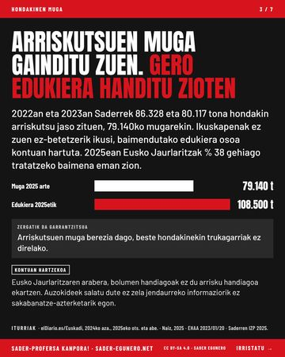
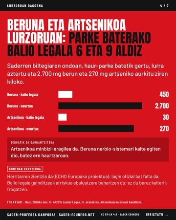
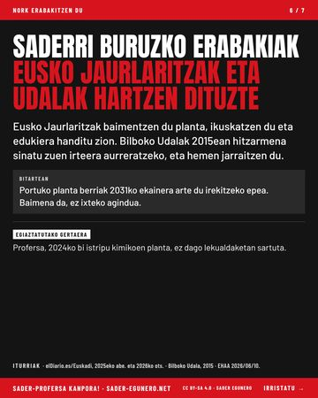

Images
All in one zip · 5.0 MBClick an image to download it at full size. Each image is published with its text and its sources: they are in the social media guide.
Instagram carousel 7 images, 4:5, in order


Single cards one fact per image, 4:5


Vertical 9:16, for stories, WhatsApp statuses and TikTok


Videos
Short video · 27 s
Vertical 9:16, for Reels, TikTok, stories and WhatsApp statuses. All the text is on screen.
Long video · 51 s
Vertical 9:16, for Reels, TikTok, stories and WhatsApp statuses. All the text is on screen.
Text for posting each video, with its sources: captions (in Spanish).
To read and print
Quick guide to social media (Spanish)
How to post each piece, with its text and its sources. Start here.
Open → PDF · 85 kBLeaflet
A4 folded to A5, black and white, bilingual. Print double-sided, flipping on the long edge.
Open → PDF · report¿Qué estamos respirando?
The full report, with all the data and its sources.
Open →Images
All in one zip · 4.9 MBClick an image to download it at full size. Each image is published with its text and its sources: they are in the social media guide.
Instagram carousel 7 images, 4:5, in order
 00 · Azala
00 · Azala 01 · Testuingurua
01 · Testuingurua
02 · Muga
03 · Lurzorua 04 · Osasuna
04 · Osasuna
05 · Nork erabakitzen06 · ItxieraSingle cards one fact per image, 4:5


Vertical 9:16, for stories, WhatsApp statuses and TikTok


Videos
Short video · 27 s
Vertical 9:16, for Reels, TikTok, stories and WhatsApp statuses. All the text is on screen.
Long video · 52 s
Vertical 9:16, for Reels, TikTok, stories and WhatsApp statuses. All the text is on screen.
Text for posting each video, with its sources: captions (in Basque).
To read and print
Quick guide to social media (Spanish)
How to post each piece, with its text and its sources. Start here.
Open → PDF · 85 kBLeaflet
A4 folded to A5, black and white, bilingual. Print double-sided, flipping on the long edge.
Open → PDF · report¿Qué estamos respirando?
The full report, with all the data and its sources.
Open →Stickers
All in one zip · 4.5 MBDesigns for anyone to print and stick up, in Spanish, in Basque and bilingual. All of them carry the website address.
To print at home: one A4 sheet with all six
In colour: Spanish · Basque · bilingual
In black and white: Spanish · Basque · bilingual
- Use A4 adhesive paper (for outdoors, adhesive vinyl).
- Print at “actual size” or “100%”, without “fit to page”.
- Do a test on plain paper first: the rectangular sticker should measure 15 cm.
- Cut along the dashed line.
Only stick them where it is allowed. · Itsatsi baimenduta dagoen lekuetan bakarrik. More details in the full instructions (in Spanish).
Design by design


Sader-Profersa Kanpora! with QR code
Rectangular, 15 × 5 cm
PNG image (300 dpi, final size)
In colour: Spanish · Basque · bilingual
In black and white: Spanish · Basque · bilingual


PDF for the print shop (bleed and crop marks)
In colour: Spanish · Basque · bilingual
In black and white: Spanish · Basque · bilingual


Leihoak ireki nahi ditugu (“We want to open our windows”)
Square, 7 × 7 cm
PNG image (300 dpi, final size)
In colour: Spanish · Basque · bilingual
In black and white: Spanish · Basque · bilingual


PDF for the print shop (bleed and crop marks)
In colour: Spanish · Basque · bilingual
In black and white: Spanish · Basque · bilingual

The lead figure, with QR code
Rectangular, 15 × 5 cm
PNG image (300 dpi, final size)
In colour: Spanish · Basque · bilingual
In black and white: Spanish · Basque · bilingual


PDF for the print shop (bleed and crop marks)
In colour: Spanish · Basque · bilingual
In black and white: Spanish · Basque · bilingual

Our health is worth more than their profits
Round, Ø 8 cm
PNG image (300 dpi, final size)
In colour: Spanish · Basque · bilingual
In black and white: Spanish · Basque · bilingual


PDF for the print shop (bleed and crop marks)
In colour: Spanish · Basque · bilingual
In black and white: Spanish · Basque · bilingual